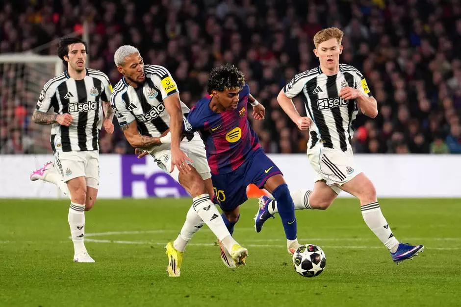

HTML5 ganha destaque na web
o HTML5 trouxe melhorias significativas para os sites com as tags semânticas.
o HTML5 trouxe melhorias significativas para os sites com as tags semânticas.
Tecnologias estão presentes na maioria dos sites modernos, trazendo estética agradavel e interatividade.
O jogo termina em 0 a 0, e torcedores reclamam do impedimento marcado pelo juíz

O jogo terminou 7 a 2, em grande atuação da equipe do Barcelona